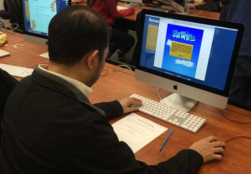

Spencer provided a lot of valuable feedback regarding the coding side of my project. He suggested important optimizations such as centralizing data from the users. He pointed out vital holes in my sign-in protocol, such as fields not being cleared and
errors when signing up with an invalid email. While all of the changes he suggested are valuable, the ones I plan to implement are improving the sign-in process and increasing security of user information. Based on his feedback , I also aim
to make the game more user-centric.

Joe provided more humanistic feedback on Sunshine. He pointed out he would like something a little more involved in terms of gameplay, as the game is a bit too straightforward to be interesting for now. He suggested some visual cues so that the player
knows the map they are looking at is a map of their real life location, and not just a game map. I will likely add a compass image to the map so the user knows what they are looking at. He also suggested some more complex additions, such as
the ability to rotate the character when the player moves around the map.